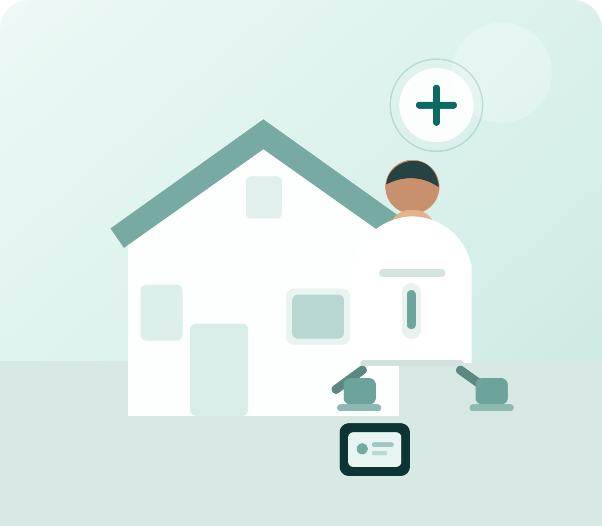

01
Routine diagnostics
Make everyday tests easy to discover with clear categories, preparation guidance and a direct enquiry path.
Browse common testsA calm, modern diagnostic experience shaped around the families of Kausar Baugh and Kondhwa — with clear testing, convenient collection and quick ways to reach the centre.

Illustrative stock photography — not FM Diagnostics staff or patients.
Established diagnostic platforms increasingly put test discovery, home collection, health packages and report access close to the top of the experience. This concept brings those ideas into a calmer local-lab design.
Make everyday tests easy to discover with clear categories, preparation guidance and a direct enquiry path.
Browse common testsPosition check-up packages around health goals, age groups and recurring wellness needs.

Give patients one obvious route to online reports or secure report delivery when the lab confirms the workflow.
Make doorstep collection a clear, mobile-first action. Final service areas and availability should be confirmed by FM Diagnostics.
Request a home visitSearch and filter common diagnostic categories. The final production version can be connected to FM Diagnostics' verified test catalogue.
Major diagnostic platforms prominently surface health packages and make the booking path immediate. This demo adopts that structure without inventing FM's real pricing.
A balanced starting point for routine preventive screening.
Designed around regular glucose monitoring and related screening.
A convenient combination for patients looking for a focused wellness screen.

Home collection is a major part of the current diagnostic booking experience. Apollo, for example, places doorstep collection and report delivery directly into its Pune patient flow.
The goal is not to imitate a large chain. It is to give a neighbourhood diagnostic centre the clarity, confidence and convenience patients have come to expect online.
Patients can start from a test, package, concern or service instead of navigating a complex menu.
Every important page naturally leads to booking, WhatsApp, calling or directions.
Claims, credentials, pricing and service availability are presented only after FM Diagnostics approves them.
Plot No. 45, NIBM Galli No. 2, opposite Café Bun Maska, Kausar Baugh, Kondhwa, Pune 411048.
Ask about a test, package, preparation requirement or home collection availability.
Start a conversationFor the demo, submissions are turned into a pre-filled WhatsApp message. A production version can connect this flow to the lab's CRM, booking system or secure enquiry backend.